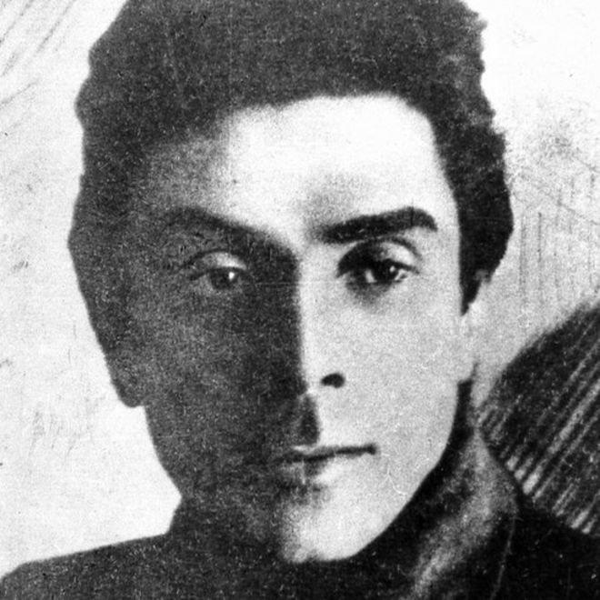
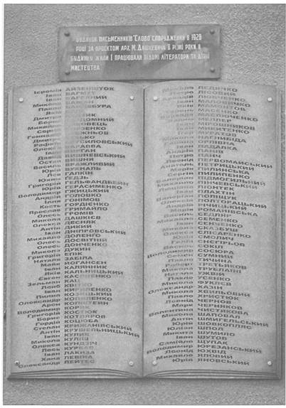

Будинок для літераторів
"Слово" збудували спеціально для літераторів. І вулицю тоді назвали - Червоних Письменників.
Аби наголосити символіку, архітектор Михайло Дашкевич навіть спроектував своє дітище у формі літери "С", вістря якої виходили у двір.
Фасад можна просто облицьовувати меморіальними дошками: ціле ґроно найталановитіших майстрів пера стали 1930 року сусідами.
Як на ті часи комуналок, спільних кухонь, "ущільнень" і безпритульності, то рівень комфорту видавався фантастичним. Окремі квартири з ізольованими кімнатами, центральне опалення.
Дорослі тішилися тодішніми дивами техніки. З'явилися перші радіоприймачі. Хто їх не мав, ходили слухати до сусідів. Для декого предметом втіхи та гордості ставала друкарська машинка.
В усі квартири поставили телефони. Невідомо, чи для зручності власників, чи для полегшення роботи спецслужб, які пильно "слов'ян" пасли. Про зміст дружніх розмов невдовзі довелося говорити зі слідчими…

Микола Хвильовий (1893-1933) - письменник і публіцист, автор гасла "Геть від Москви", який вважав, що українська культура має орієнтуватися на Європу
Попри побутові зручності, писалося тут не дуже натхненно. Якраз від 1930 року тоталітарні тенденції стають усе сильнішими. Скаженіє цензура. Улюбленців муз і грацій почали тягати в ГПУ, то на розмови, то на вербування, то на допити.
Гріхів проти радянської влади у всіх знаходилося безліч. Ті воювали під "неправильними" (тобто не червоними) прапорами, ті надто песимістично описували пореволюційну дійсність, замість її славити.
Ще інші демонстрували шкідливе й неприйнятне, як на господарів становища, захоплення європейською культурою та недостатню любов до "червоної Москви".
Саме проблеми культурної (а зрештою й політичної) орієнтації - на Захід чи на Росію - пристрасно обговорювалися наприкінці двадцятих у ході знаменитої літературної дискусії, ґвалтовно зупиненої владою.
Перший арешт і самогубство
Урешті 12 травня 1933 протистояння інтелектуалів, творчої інтелігенції та влади перейшло в нову фазу. До "Слова" завітали непрохані нічні візитери, після тривалого обшуку заарештували колишнього президента угруповання ВАПЛІТЕ (Вільної Академії Пролетарської Літератури) Михайла Ялового.
Микола Хвильовий, який був неформальним лідером не тільки організації, а й усього літературного покоління, вирішив, очевидно, не чекати неминучого.
Він любив число 13. Часто згадував про це у своїх текстах. І народився 13 грудня. А тепер от 13 травня, сонячного недільного ранку, вирішив зіграти останній акт життєвої драми за власним, а не за енкаведистським, сценарієм. Запросив у гості друзів, зокрема Миколу Куліша, Олеся Досвітнього. Чаювали, господар співав, узявши в руки гітару. Хвалився, що написав новий твір, пішов у кабінет узяти рукопис і прочитати.

На меморіальній дошці на будинку десятки імен представників українського "розстріляного відродження"
Почувся глухий постріл, першим кинувся до зачинених дверей Куліш. Хвильовий сидів у кріслі з простреленою скронею. Друзі ще встигли прочитати його передсмертні записки - невдовзі, з появою міліції, вони зникли.
Хвильовий писав, що вважає себе відповідальним за долю цілої своєї мистецької ґенерації. Називав арешт Ялового непорозумінням. Окрему записку адресував своїй прийомній доньці Любочці, яку по-батьківськи любив. А будинок "Слово" харків'яни невдовзі почали називати крематорієм. Ніч у ніч сюди приїздили машини, названі в народі "воронками", і забирали все нових жертв. Вина не мала значення.
Приречені на смерть
Скажімо, знаємо фантасмагоричну історію про арешт за чужим ордером. 4 листопада 1934 (якраз ще й старалися, мабуть, виконати план до річниці більшовицької революції) енкаведисти піднялися на 4 поверх "Слова". Господаря квартири, драматурга Василя Минка, вдома не застали.
За одною з версій, він був попередженим про арешт і втік аж у Підмосков'я. Але план треба виконувати. Спустилися на третій поверх, зайшли у квартиру іншого Василя, Мисика. Молодий, дуже талановитий, цілковито далекий від політики лірик. Коли наказали збиратися, попросив показати ордер на арешт. Там стояло ім'я сусіда, Минка. Але невідповідність не зупинила стражів порядку: хтось сьогодні, інший завтра - яка різниця… "Галочку" у списку поставили проти прізвища Минка, і це врятувало йому життя. А Василь Мисик, так і не визнавши ніякої вини, не підписавши жодних визнань, уник найстрашнішої долі. Відсидів свій п'ятирічний строк, повернувся до Харкова і тихо та непомітно доживав життя, намагаючись не привертати уваги влади.
Впродовж 1933 - 1938 років мешканців, які заселилися в новозбудоване "Слово", майже не лишилося. Чимало з них загинули в урочищі Сандармох. Поодиноким вдалося обманути зловісну долю і врятуватися втечею, намагаючись жити чужим, а не своїм життям.